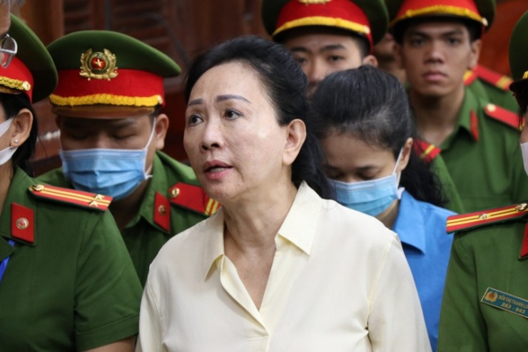
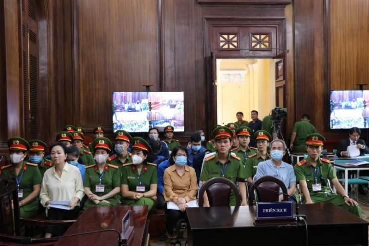

Bị cáo Nguyễn Văn Du, cựu Quyền Chánh thanh tra Cơ quan Thanh tra giám sát Ngân hàng Nhà nước là bị cáo duy nhất trong đoàn thanh không nhận tiền hối lộ từ SCB. Tuy nhiên, Viện Kiểm sát (VKS) xác định bị cáo Du là người trực tiếp ký kết luận thanh tra tại Ngân hàng SCB, gây thiệt hại hơn 514.102 tỷ đồng nên bị truy tố về tội “Thiếu trách nhiệm gây hậu quả nghiêm trọng", bị đề nghị mức án 3 - 4 năm tù.
Theo đó, trong 3 đoàn thanh tra của Ngân hàng Nhà nước, chỉ có đoàn thanh tra liên ngành có nội dung thanh tra toàn diện với SCB. Kết quả thanh tra là cơ sở để đánh giá đúng tình hình, thực trạng tín dụng, nợ xấu, cơ cấu nợ của ngân hàng này cũng như tình trạng sở hữu cổ phần, kiểm soát, điều hành tại SCB của bà Trương Mỹ Lan, Tập đoàn Vạn Thịnh Phát để Chính phủ, Ngân hàng Nhà nước có các giải pháp, biện pháp xử lý phù hợp.
Quá trình thanh tra, các cá nhân là lãnh đạo Cơ quan Thanh tra giám sát ngân hàng, trưởng đoàn, phó đoàn và các thành viên đã nhận tiền, quà, lợi ích vật chất từ SCB để bao che, báo cáo không trung thực, không đầy đủ kết quả thanh tra cho Ngân hàng Nhà nước.
Bị cáo Nguyễn Văn Du khi đó là người thực hiện chức năng nhiệm vụ của người ra quyết định thanh tra (thay ông Nguyễn Văn Hưng từ tháng 10/2018), đã trực tiếp ký kết luận thanh tra số 3959 ngày 4/12/2018; duyệt, ký nháy tờ trình số 81 báo cáo việc thực hiện chỉ đạo của Chính phủ, ký các văn bản gửi các đơn vị liên quan thực hiện theo các kiến nghị kết luận thanh tra trên.
Nội dung kết luận thanh tra do ông Du ký thể hiện không trung thực, không đúng so với kết quả thanh tra về tình hình, thực trạng tài chính, vi phạm, sai phạm và các kiến nghị đối với SCB. Cụ thể, kết luận đã bỏ ra ngoài số liệu nợ xấu 3 dự án, gồm: Mũi Đèn Đỏ, 6A và Royal Garden. Nếu tổng hợp đầy đủ các số liệu này, nợ xấu của SCB tại thời điểm ngày 30/6/2017 là 35,87% nhưng trong kết luận chỉ là 20,92%. Ngoài ra, kết luận thanh tra không kiến nghị chuyển cơ quan điều tra xử lý đối với sai phạm của nhóm 71 khách hàng đăng ký kinh doanh tại số 4 Nguyễn Thị Minh Khai...
Bị cáo Nguyễn Văn Du thừa nhận có quen biết, nhiều lần gặp gỡ Đinh Văn Thành, cựu Chủ tịch Hội đồng quản trị SCB và Võ Tấn Hoàng Văn, cựu Tổng giám đốc SCB. Trong các lần gặp, kể cả thời điểm bị cáo Du được bổ nhiệm giữ chức Quyền Chánh Thanh tra Cơ quan Thanh tra giám sát ngân hàng, Đinh Văn Thành và Võ Tấn Hoàng Văn có đưa quà, song bị cáo đều không nhận và trả lại.
Trong phần bào chữa cho bị cáo Nguyễn Văn Du, luật sư Nguyễn Hồng Bách đề nghị HĐXX xem xét về hoàn cảnh của bị cáo Du khi đó mới tiếp nhận công việc, các kết quả thanh tra đều đã được thông qua, bị cáo chỉ là người ký ban hành sau cùng về mặt thủ tục. Bị cáo vì tin tưởng nên đã có thiếu sót mới dẫn đến hậu quả như hiện nay...